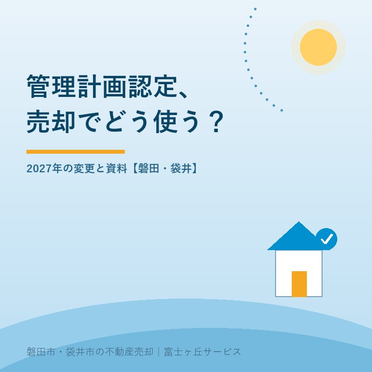
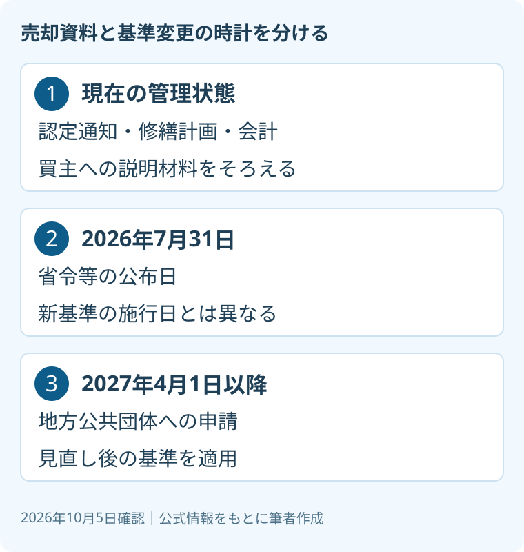

マンション管理計画認定、2027年変更と売却
2026年10月5日｜カテゴリ：売却実務・物件評価

この記事の要点
親のマンションに管理計画認定があれば、高く売れる？
認定は管理状態の説明材料ですが、価格上昇を保証しません。認定通知、修繕計画、会計資料を確認します。2027年4月1日以降の地方公共団体への申請は見直し後の基準です。売却時期と申請時期を分けて考えます。磐田市・袋井市では、介護施設の運営から不動産事業を始めた富士ヶ丘サービスのような地域密着の会社に相談する選択肢があります。
大石浩之（磐田市／不動産業）です。親のマンションを売る準備では、部屋の傷みや設備に目が向きます。しかし買主が引き継ぐのは、室内だけではありません。管理組合の運営と、共用部分の修繕を続ける仕組みも、説明する材料になります。
2026年10月5日に国土交通省の「マンション管理計画認定制度」を確認しました。認定の有無をどう説明するかと、2027年からの申請基準をどう読むかを分けます。本記事で、認定により売値がいくら上がるかは示しません。裏取りした上昇額がないためです。
管理計画認定は、部屋の査定書ではない
国土交通省のマンション管理計画認定制度は、一定の認定基準を満たす管理計画について認定を受ける仕組みです。現行基準には、年1回以上の総会開催、管理規約の作成、管理費と修繕積立金等の区分経理が挙げられています。
区分経理とは、管理費と修繕積立金などを分けて会計処理することです。修繕積立金は、共用部分の修繕などに備えるお金です。見た目がきれいなマンションかという印象だけでなく、運営や会計の仕組みを確認する基準が含まれています。
長期修繕計画については、計画期間30年以上で、残存期間内に大規模修繕工事が2回以上含まれること等が示されています。長期修繕計画とは、先の工事と費用を見通す計画です。地方公共団体が独自基準を設ける場合もあり、申請先への確認が案内されています。
私は、認定を「この部屋の価格を保証する札」とは扱いません。管理の説明に使える材料であって、室内の状態や個別の権利関係を調べる作業の代わりにはならないからです。認定の有無だけで売却判断を決めない、と言い切ります。

認定資料と併せて、直近の総会議事録、修繕計画、会計資料を確認したいところです。議事録で検討中の事項が分かれば、確定した負担とまだ決まっていない案を分けて説明できます。資料を持ち出す際は、管理組合の取扱いと個人情報に配慮します。
良い点は、管理の話を資料で説明できること
管理計画認定の良い点は、買主へ管理状態を説明するときに、確認の共通項目を持てることです。国土交通省は、制度のメリットとして、管理の適正化への自主的な取り組みや、市場での適切な評価を挙げています。価格上昇の定額保証とは異なります。
私が評価するのは、売主の「しっかりした管理だと思う」という印象から一歩進めることです。総会の開催、会計の区分、修繕計画の期間などを資料で確認できます。部屋を長く見に行けなかった家族も、何を管理組合へ尋ねるかが分かりやすくなります。
その上で、注文したいのは、認定があるという説明で止めないことです。認定通知の対象と日付、現在の管理の状況を確認します。申請準備中なのか、認定済みなのかも分けます。「認定を目指す」と「認定を受けている」を広告で混ぜないようにします。
私には迷いもあります。認定を待つために売却相談を遅らせるべきかは、家族の支出や管理組合の予定で違うからです。認定がない場合でも、管理資料をそろえる道はあります。確認できるものを先に集め、その後で売却時期を考える案を私は残します。
2027年4月1日以降の申請は、見直し後の基準
国土交通省の「令和9年4月1日施行関係」は、2026年7月31日に公布した省令及び告示を掲載しています。施行日は2027年4月1日です。公布は制度内容を公にすること、施行は適用が始まることです。2026年10月時点で施行済みとは書けません。
掲載された省令は「マンションの管理の適正化の推進に関する法律施行規則及び長期優良住宅の普及の促進に関する法律施行規則の一部を改正する省令」です。2026年の国土交通省令第70号で、分譲事業者が申請者となる認定基準の新設等が説明されています。
同じ案内は、管理組合の管理者等が申請者となる認定基準の見直しにも触れています。地方公共団体への申請日が2027年4月1日以降の場合、見直し後の基準が適用されます。事前確認や、その前段の準備をした日だけで判断しないようにします。
| 日付・出来事 | 売主が区別すること |
|---|---|
| 2026年7月31日 | 省令等の公布。現在の認定を自動で変える日とは扱わない |
| 2027年4月1日 | 省令等の施行。以降の地方公共団体への申請は新基準 |
| 部屋の売却日 | 申請日の基準とは別。現にある認定と資料を確認 |
売主にとって意外なのは、基準の切り替えが部屋の売買契約日を目印にしていないことです。家族が2027年に売る予定でも、申請がどの段階かは管理組合側の予定によります。将来売るから新基準で認定済み、といった説明はできません。
既存の認定や更新について個別にどう扱うかは、通知書と申請先の案内で確認します。国のページの概要だけから、すべてのマンションで同じ手続きが必要だと断定しない。今回の記事は新旧基準の細目を網羅するものではなく、日付を取り違えないための整理です。
個人で認定を約束せず、管理組合に資料を尋ねる
国土交通省が掲載する申請の流れでは、管理組合の総会決議を経て、事前確認を行い、地方公共団体へ申請する手順が示されています。売主一人で「認定を取ってから売る」と約束する前に、管理組合の状況を確認する必要があります。
私は問い合わせを、認定の有無、認定通知の写し、現在の修繕計画、今後の申請予定に分けるよう提案します。担当者が調べるべき資料を特定しやすくなるからです。認定通知が見当たらないときに、口頭で聞いたという理由だけで認定済みと広告しないようにします。
| そろえる資料 | 見る箇所 |
|---|---|
| 認定通知・申請状況 | 対象、日付、認定済みか準備中か |
| 長期修繕計画・総会議事録 | 計画の時点、工事や費用の決定状況 |
| 管理費・修繕積立金の資料 | 現在の額と変更に関する説明 |
修繕工事をめぐる管理の説明は、修繕費と関係会社取引の確認ともつながります。認定制度の話と、工事発注の説明の話は別です。認定があるという理由で、個別工事の費用や選定理由を確認しなくてよいとは考えません。
売却後の負担が心配なら、マンション売却後の賠償金と総会資料も確認してください。何が決定済みか、どの時点の資料かを仲介担当者に伝えます。将来の請求や契約での負担の決め方は、専門家に確認を。
磐田・袋井の家族は、手元の資料から売却準備を始める
磐田市・袋井市の親のマンションを家族が整理する場合、まず手元の通知と管理組合の連絡先を探します。地域のマンション全体の認定率や値上がり幅を、本記事では確認していません。市内だから認定を受けられる、とは言わず、対象物件と申請先で確認します。
私はこう考えます。親の部屋の鍵を預かる日を想定し、鍵の横に管理組合の連絡先と資料名を置く。認定通知がなくても、次に誰へ何を聞くかは決められます。これは実際の相談場面の紹介ではなく、私なら準備をこう組むという意見です。室内の片付けだけで一日を使い切る前に、管理の資料を一つ見つける時間を残したいところです。
売却価格の相談では、査定と不動産鑑定の違いも参考になります。認定の有無を伝えた上で、査定額にどの資料を反映したのか尋ねます。「認定だから高い」という言葉より、比較条件が分かる説明を私は求めます。
今日できる確認は、管理組合へ認定通知と修繕計画の所在を聞くことです。富士ヶ丘サービスでは、磐田市・袋井市を中心に介護と不動産を一体で相談できます。家族が困らない売却のため、私なら現在確認できる資料を先にそろえます。税務・登記・契約上の個別判断は専門家に確認を。
よくある質問
- 管理計画認定があれば、必ず高く売れますか？
- 必ず高く売れるとは言えません。管理計画認定は、管理状態を説明する資料の一つです。国土交通省は市場での適切な評価をメリットとして示していますが、個別物件の価格上昇を保証していません。部屋の状態や売却条件も別に確認します。認定通知と現在の管理資料をそろえ、査定へ何を反映したかを仲介会社に尋ねます。
- 2027年に売るなら、必ず新基準の認定が必要ですか？
- 国土交通省が示す切り替えの目印は、地方公共団体への申請日です。2027年4月1日以降の申請は見直し後の基準を適用します。部屋を売る日を基準に、必ず新認定を取るという説明ではありません。現在の認定通知、申請・更新の状況を管理組合と申請先へ確認し、売却日と手続きの日付を分けて整理します。
- 売主一人で管理計画認定を申し込めますか？
- 国土交通省が掲載する管理組合の申請の流れには、総会決議、事前確認、地方公共団体への申請が示されています。個人の売主だけで取得を約束せず、管理組合の認定と申請の状況を尋ねます。2027年の制度には分譲事業者が申請者となる基準も新設されますが、親の部屋の売主がその立場になると読み替えてはいけません。

この記事を書いた人：大石浩之（磐田市／不動産業・宅地建物取引士）
富士ヶ丘サービス株式会社。磐田市・袋井市を中心に、介護と相続、実家の売却を一体で相談できる窓口を設けています。家族が困らない売却のため、資料と現地の条件を一件ずつ整理します。著者プロフィール
本記事は2026年10月5日時点の公開情報と筆者の意見です。制度・数値・手続き・契約条件は変更されることがあります。税務・登記・相続・重要事項説明・契約などの個別判断は、税理士・司法書士・弁護士などの専門家に確認を。